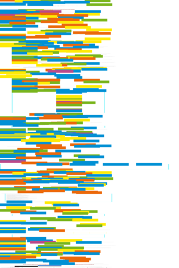
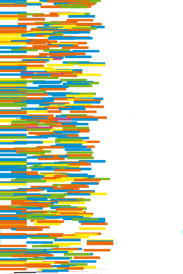
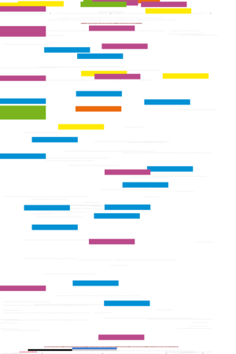
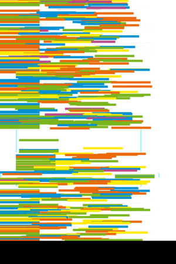
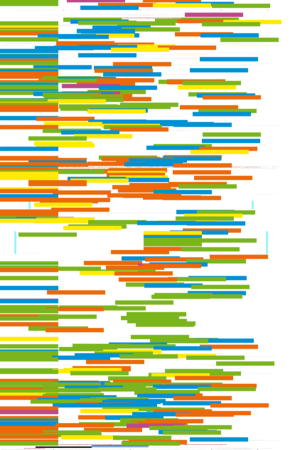
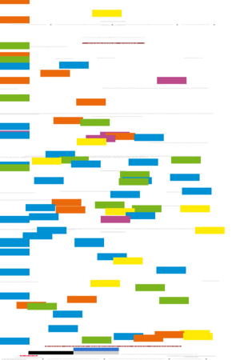

| About IR |
| Editors |
| Author instructions |
| Copyright |
| Author index |
| Subject index |
| Search |
| Reviews |
| Weblog |
| Register |
| Home |
Volume 12 No 4 October, 2007
 Special supplement: Proceedings of the Sixth International Conference on Conceptions of Library and Information Science—"Featuring the Future"
Special supplement: Proceedings of the Sixth International Conference on Conceptions of Library and Information Science—"Featuring the Future"
Marcia J. Bates
Invited paper:
 What is browsing—really? A model drawing from behavioural science research
What is browsing—really? A model drawing from behavioural science research
Judit Bar-Ilan
The use of Weblogs (blogs) by librarians and libraries to disseminate information
Sheila Corrall
Benchmarking strategic engagement with information literacy in higher education: towards a working model.
J. Carlos Fernández-Molina y José Augusto Chaves Guimarães
Las nuevas leyes de derecho de autor: ¿adecuadas para la preservación digital?
Chun-Yao Huang, Yung-Cheng Shen, I-Ping Chiang and Chen-Shun Lin
 Concentration of Web users' online information behaviour
Concentration of Web users' online information behaviour
Kyunghye Kim, Mia Liza A. Lustria, Darrell Burke and Nahyun Kwon
Predictors of cancer information overload: findings from a national survey
Susana Romanos de Tiratel y Graciela M. Giunti
 Las revistas argentinas de Ciencias Antropológicas: visibilidad en bases de datos internacionales
Las revistas argentinas de Ciencias Antropológicas: visibilidad en bases de datos internacionales
B. A. Sen & R. Taylor
Determining the information needs of small and medium-sized enterprises: a critical success factor analysis.
Mike Thelwall, Aidan Byrne and Melissa Goody
 Which types of news story attract bloggers?
Which types of news story attract bloggers?
Case studies in open access publishing. Number four.
Paul G. Haschak
The 'platinum route' to open access: a case study of E-JASL: The Electronic Journal of Academic and Special Librarianship
Resúmenes en Español
Watch this: Webified markup — one of a series of occasional columns by Terrence A. Brooks of the Information School, University of Washington, USA.
Our reviewers
Reviews
Boiko, Bob. Laughing at the CIO: a parable and prescription for IT leadership. Medford, NJ: Information Today, Inc., 2007.
Bradley, Phil. How to use Web 2.0 in your library. London: Facet Publishing, 2007.
Farkas, Meredith G. Social software in libraries: building collaboration, communication, and community online. Medford, NJ: Information Today Inc., 2007.
Feldt, Kenneth C. Programming Firefox. Sebastopol, CA: O'Reilly, 2007.
Herrero, Leandro. New leaders wanted: now hiring! 12 kinds of people you must find, seduce, hire and create a job for. Beaconsfield: Meeting minds. 2007.
Kauhanen-Simanainen, Anne. Corporate literacy: discovering the senses of the organisation. Oxford: Chandos Publishing, 2007.
Kovacs, Diane. The virtual reference handbook: interview and information delivery techniques for the chat and e-mail environments. London: Facet Publishing, 2007.
Moggridge, Bill. Designing interactions. Cambridge, MA: The MIT Press, 2007.
Pickard, Alison Jane. Research methods in information London: Facet Publishing, 2007.
Pugh, Lyndon. Change management in information services. 2nd ed. Aldershot: Ashgate, 2007.
Talbott, S. Devices of the soul: battling for our selves in an age of machines. Sebastopol, CA: O'Reilly, 2007.
Weinberger, David. Everything is miscellaneous: the power of the new digital disorder. New York, NY: Henry Holt & Company, 2007.
West, Darrell M. Digital government: technology and public sector performance. Princeton: NJ; Oxford: Princeton University Press, 2007.
White, Martin. Making search work: implementing web, intranet and enterprise search. London: Facet Publishing, 2007.
What's in the open access e-journals?
Conference announcements
The 14th INFORUM Conference on Professional Information Resources INFORUM 2008, May 28 - 30, 2008, Prague (Czech Republic)
Information seeking in context, 2008
A message to Conference organizers.
Looking for something else?
Check the other resources available at InformationR.net - free resources for information researchers. If you find Information Research useful please sign in and we'll notify you of future issues.
Contribute ideas and links to relevant resources on the Weblog. Join at
http://www.free-conversant.com/irweblog/
Information Research: an international electronic journal, is published four times a year by Professor Tom Wilson with technical support from Lund University, Sweden and editorial support from the Swedish School of Librarianship and Information Science, Högskolan in Borås.
| ||||
 |
|
Web Counter |
||